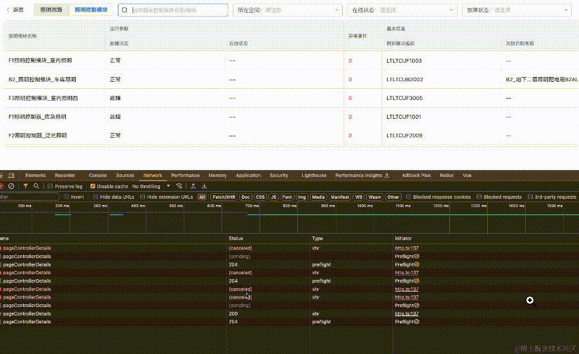

2024-07-14 10:40:43 · YinHao
axios 其实内置了一个取消重复请求的方法：axios.CancelToken，我们可以利用 axios.CancelToken 来取消重复的请求，爆好用！
首先，我们要知道，aixos 有一个 config 的配置项，取消请求就是在这里面配置的。
<template>
<div>
<button @click="fetchData">请求</button>
</div>
</template>
<script setup>
import { ref } from "vue";
import axios from "axios";
let cancelTokenSource = null;
function fetchData() {
if (cancelTokenSource) {
cancelTokenSource.cancel("取消上次请求");
cancelTokenSource = null;
}
cancelTokenSource = axios.CancelToken.source();
axios
.get("http://api/gcshi", { cancelToken: cancelTokenSource.token }) //
.then((response) => {
laoding.value = fasle;
});
}
</script>
我们测试下，如下图：可以看到，重复的请求会直接被终止掉！
const CancelToken = axios.CancelToken;
const source = CancelToken.source();
axios
.get("/user/12345", {
cancelToken: source.token,
})
.catch(function (thrown) {
if (axios.isCancel(thrown)) {
console.log("Request canceled", thrown.message);
} else {
// 处理错误
}
});
axios.post(
"/user/12345",
{
name: "new name",
},
{
cancelToken: source.token,
}
);
// 取消请求（message 参数是可选的）
source.cancel("Operation canceled by the user.");
也可以通过传递一个 executor 函数到 CancelToken 的构造函数来创建一个 cancel token：
const CancelToken = axios.CancelToken;
let cancel;
axios.get("/user/12345", {
cancelToken: new CancelToken(function executor(c) {
// executor 函数接收一个 cancel 函数作为参数
cancel = c;
}),
});
// 取消请求
cancel();
注意: 可以使用同一个 cancel token 或 signal 取消多个请求。
在过渡期间，您可以使用这两种取消 API，即使是针对同一个请求：
const controller = new AbortController();
const CancelToken = axios.CancelToken;
const source = CancelToken.source();
axios
.get("/user/12345", {
cancelToken: source.token,
signal: controller.signal,
})
.catch(function (thrown) {
if (axios.isCancel(thrown)) {
console.log("Request canceled", thrown.message);
} else {
// 处理错误
}
});
axios.post(
"/user/12345",
{
name: "new name",
},
{
cancelToken: source.token,
}
);
// 取消请求 (message 参数是可选的)
source.cancel("Operation canceled by the user.");
// 或
controller.abort(); // 不支持 message 参